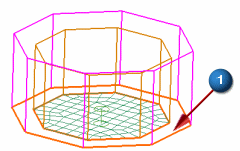
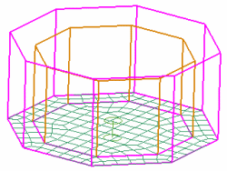

Mesh the payload platform
The 2D Mesh dialog box should still be open from the previous step.
-

 the payload platform face
the payload platform face

The dialog box settings should remain as you set them for the previous 2D meshes.
-
OK

 Simulation Navigator
Simulation Navigator
-
Select the other 2D_mesh nodes in the Navigator so all 2D meshes are displayed.
 Save (Standard toolbar)
Save (Standard toolbar)